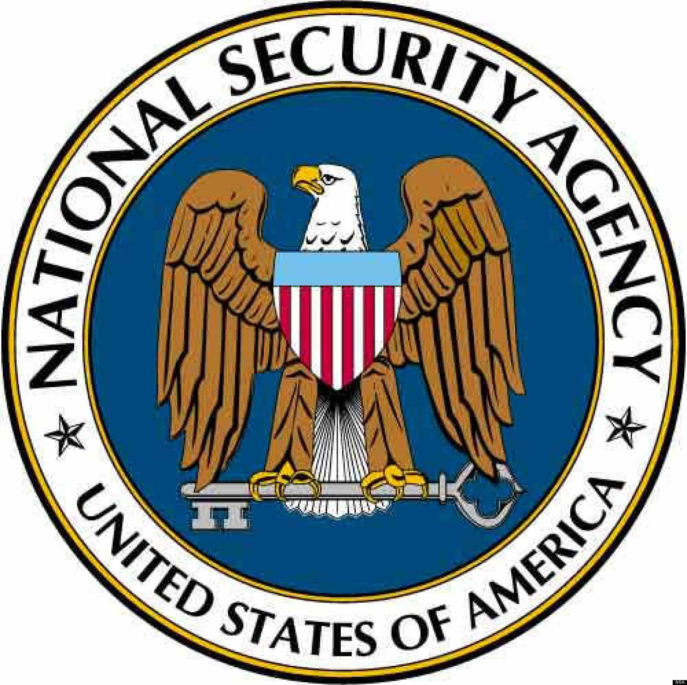
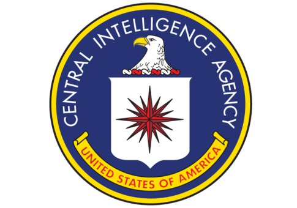

Leben
- Edward Snowden wurde am 21.Juni 1983 in North Carolina geboren
- Er studierte Informatik ohne Schulabschluss, doch er konnte aufgrund seines Talentes/seiner Intelligenz schnell sehr hocharbeiten
- Er ist ein IT-Genie, der sich das meiste selbstbeibrachte
- 2001 war er im Militärdienst und wollte am Irakkrieg teilnehmen, aber er wurde wegen eines zweifachen Beinbruches ausgemustert
- Im Verlaufe seines Lebens war er: Systemadministrator, Systemingenieur, leitender Berater, Infrastrukturanalyst für die CIA und die NSA, wodurch er Zugang zu geheimen Informationen hatte
- Am 5.Juni 2013 war der Beginn der Veröffentlichung und somit wurde die Spionageaffäre aufgedeckt
- Am 9.Juni 2013 trat Snowden an die Öffentlichkeit
- Am 14.Juni 2013 wurde der internationale Haftbefehl rausgegeben und Edward Snowden wird zum meist gesuchten Mann der Welt

